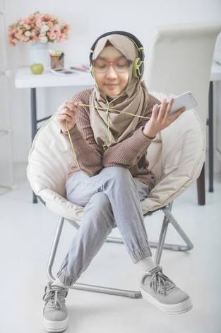
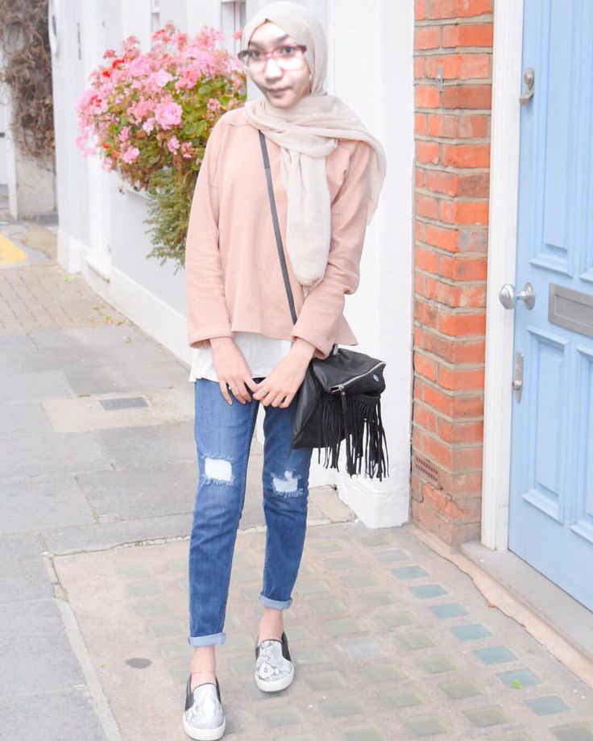
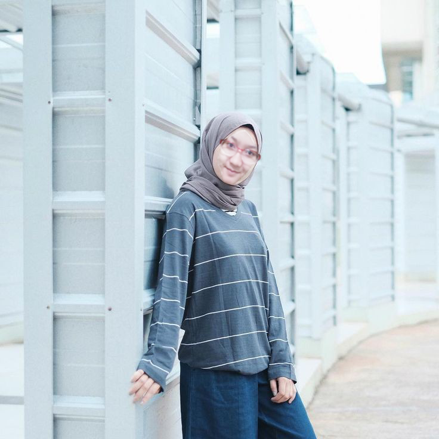
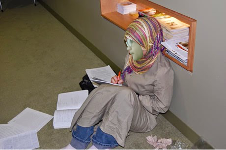

About Me

Ini adalah fotoku^^
Hobby
Sekarang kita mulai membicarakan tentang hobi. Hobi aku tuh sebenernya banyak lho... Beberapa diantaranya adalah :
Mendengarkan Musik
Musik adalah suara yang disusun sedemikian rupa sehingga mengandung irama, lagu dan keharmonisan terutama dari suara yang dihasilkan dari alat-alat yang dapat menghasilkan irama. Yah itu pengertian yang aku search di Mbah Google. Tapi menurutku sih ya, musik itu adalah suatu irama yang bisa membuat kita menjadi lebih rileks. Yaah tergantung musiknya juga sih. Kalau musik yang bikin kuping kita sakit sih, bukan bikin kita tambah rileks, malah bikin kita makin tambah pusyang tujuh keliling, hemhemhem...
Musik yang sering aku dengarkan biasanya musik yang berirama pelan atau yang nadanya itu rada sedih gitu. Kenapa aku pilih itu? Yah gak ada alasan khusus sih cuma seru aja didengerinnya dan enak juga didengerinnya.

Travelling
Selain mendengarkan musik, aku tuh sukanya berkeliling menjelajahi ciptaan Allah yang menurutku sudah besar ini, yaitu Bumi kita. Yah enggak punya kita juga sih, Bumi titipan dari Allah untuk kita. Biasanya kalau aku berkeliling sih yang gak jauh-jauh amat sih, paling berkeliling di alam mimpi hehe
Mimpinya pun belum tentu keluar negeri sih, tapi seenggaknya hobi aku bermimpi wkwk, bermimpi sambil berandai-andai kali yaa... dan inilah andai-andaiku selama bermimpi...


Menulis Cerita
Oke selain kedua hal tadi, hobi aku itu menulis cerita atau kalau yang lebih spesifik lagi mungkin merangkai aksara kali yaa... Biasanya kalau ada ide, aku akan menulis cerita di salah satu aplikasi pengolah kata yang ada di ponselku. Biasanya kalau lagi semangat-semangatnya dalam merangkai kata, aku dapat menghabiskan waktu bermenit-menit aja sih gak sampai berjam-jam untuk menulis ide dan mengembangkannya, tapi yaa karena hanya beberapa menit, hasil tulisan aku pun tidak terlalu banyak.

Oke mungkin segitu dulu aja yaa hobiku yang aku ceritakan kepada kalian. Mungkin sekiranya ini akhir kata dari post-an aku untuk kalian. Kalau misalkan ini gak berfaedah mohon maaf yang sebesar-besarnya dan toling untuk dibukakan pintu maaf yang selebar-lebarnya.